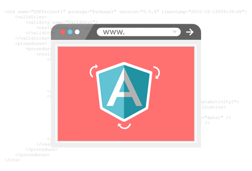
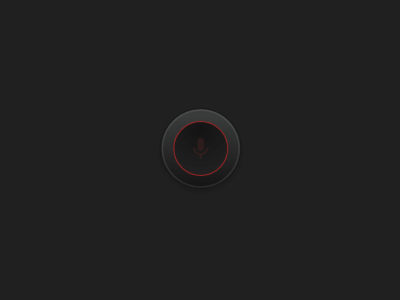

Knowledge in Angular
Con más de cinco años inmerso en el fascinante mundo del desarrollo web, he consolidado una experiencia excepcional en la creación de aplicaciones innovadoras, y mi especialización en Angular ha sido la joya de mi carrera. Desde el inicio de mi viaje, me sumergí en los entresijos de Angular, explorando cada rincón del framework con entusiasmo y dedicación. Mi pericia abarca la construcción de arquitecturas robustas, diseñando componentes que no solo son visualmente atractivos, sino que también cumplen con los más altos estándares de rendimiento y mantenimiento..
WHO I AM

Hola! Soy Santiago Marín, un entusiasta desarrollador con tres años de experiencia en la industria de la tecnología. Mi pasión por la creación de soluciones innovadoras me ha llevado a sumergirme en el fascinante mundo del desarrollo de software. Actualmente, me encuentro explorando los misterios y desafíos que presenta el desarrollo de aplicaciones mientras sigo avanzando en mi educación en la Universidad del Bosque. Mi área de especialización se centra en las bases de datos, donde he demostrado habilidades expertas en el diseño y la gestión eficiente de sistemas de almacenamiento de datos. Mi enfoque meticuloso y orientado a los detalles me ha permitido optimizar el rendimiento de las bases de datos, garantizando un acceso rápido y seguro a la información crucial. Aunque ya cuento con una sólida experiencia en la industria, mi búsqueda constante de conocimiento me mantiene como un estudiante activo, siempre ansioso por aprender y aplicar nuevas tecnologías para mejorar mis habilidades y contribuir de manera significativa a los proyectos en los que participo. Estoy emocionado por lo que el futuro me depara en este apasionante campo y ansío seguir creciendo como desarrollador. Mi compromiso con la excelencia y la mejora continua reflejan mi dedicación al desarrollo de soluciones tecnológicas de calidad. ¡Conviértete en parte de mi viaje y descubre cómo juntos podemos impulsar la innovación en el mundo del desarrollo de software!.
STUDIES

Soy un apasionado estudiante de la Universidad del Bosque, actualmente cursando el sexto semestre de la carrera de Ingeniería de Sistemas. Mi trayectoria académica en esta prestigiosa institución ha sido fundamental para mi desarrollo como futuro profesional de la tecnología. La Universidad del Bosque ha demostrado ser un lugar donde la excelencia académica se fusiona con una comunidad comprometida y un ambiente propicio para el crecimiento personal y profesional. Durante mis estudios, he tenido el privilegio de sumergirme en el fascinante mundo de la ingeniería de sistemas, explorando a fondo los principios fundamentales y las últimas tendencias tecnológicas. En el corazón de mi formación académica está el enfoque especializado en el diseño y desarrollo de sistemas complejos, así como la gestión eficiente de proyectos de software. La Universidad del Bosque no solo proporciona conocimientos teóricos sólidos, sino que también fomenta la aplicación práctica a través de proyectos desafiantes y colaborativos. El sexto semestre de mi carrera ha sido especialmente enriquecedor, ya que he profundizado mis conocimientos en áreas como la inteligencia artificial, la ciberseguridad y el desarrollo de aplicaciones avanzadas. La universidad ha demostrado ser un faro de innovación, guiándonos hacia un futuro tecnológico emocionante..
CERTIFICATES

En Udemy, he obtenido certificaciones destacadas que han enriquecido mi conjunto de habilidades y me han permitido explorar a fondo diversas tecnologías. Entre mis logros, destaco mi certificación en Angular, donde he perfeccionado mi capacidad para crear aplicaciones web dinámicas y eficientes. Además, mi dedicación a la excelencia se refleja en mi certificación en Flutter, un framework innovador para el desarrollo de aplicaciones multiplataforma. Este conocimiento me ha permitido diseñar y construir experiencias de usuario fluidas y atractivas que se ejecutan de manera consistente en iOS y Android. En mi búsqueda de un entorno de desarrollo eficiente, también he obtenido certificaciones en el manejo avanzado de Dark Visual Studio, mejorando mi capacidad para crear y mantener proyectos de software de manera eficaz. Estas certificaciones no solo representan mi compromiso con la formación continua, sino que también subrayan mi habilidad para adaptarme y destacar en el panorama tecnológico en constante cambio. Estoy emocionado de aplicar estos conocimientos en mis proyectos futuros y de seguir explorando nuevas oportunidades de aprendizaje para seguir creciendo como profesional del desarrollo de software. ¡Vamos juntos hacia el futuro tecnológico!.
Knowledge in Flutter
Con varios años de experiencia especializada en Flutter, he liderado y contribuido a proyectos que abarcan desde aplicaciones empresariales hasta soluciones de consumo. Mi enfoque se centra en la creación de interfaces de usuario altamente interactivas y estéticamente atractivas que proporcionan una experiencia consistente y envolvente en todas las plataformas, ya sea en iOS o Android. Mi experiencia se extiende más allá de la creación de interfaces visualmente impactantes. También he perfeccionado mis habilidades en la integración de servicios, la gestión eficiente del estado de la aplicación y la implementación de características avanzadas que hacen que las aplicaciones Flutter destaquen en el mercado. Además, mi compromiso con la mejora continua me mantiene al tanto de las últimas actualizaciones y mejores prácticas en el ecosistema de Flutter, asegurando que cada proyecto se beneficie de las innovaciones más recientes. Si buscas un experto en Flutter apasionado por la creación de aplicaciones eficientes, bellas y altamente funcionales, has llegado al lugar correcto. Estoy emocionado de aplicar mi experiencia para llevar tus ideas digitales al siguiente nivel con Flutter. ¡Vamos a construir algo increíble juntos!
TYPE SCRIPT

Como experto en TypeScript, he liderado proyectos que han aprovechado al máximo las características de tipado estático, interfaces y otras funcionalidades avanzadas que ofrece este lenguaje. Mi enfoque se centra en la creación de código limpio, mantenible y escalable, utilizando TypeScript para mejorar la calidad y la seguridad de las aplicaciones. He trabajado en diversos contextos, desde el desarrollo de aplicaciones frontend con frameworks como Angular hasta la creación de servidores y APIs backend con Node.js y Express. Mi experiencia abarca desde la gestión avanzada del estado de la aplicación hasta la implementación eficiente de patrones de diseño que maximizan la reutilización del código. Además, mi compromiso con la comunidad de desarrollo se refleja en mi participación activa en la exploración y promoción de las mejores prácticas en el uso de TypeScript. Estoy emocionado por continuar impulsando proyectos innovadores y colaborar con equipos apasionados que buscan elevar la calidad y la eficiencia de su código mediante el uso experto de TypeScript. ¡Unámonos para construir el futuro del desarrollo de software! .
Dark
Conocimiento en Dark (flutter) .